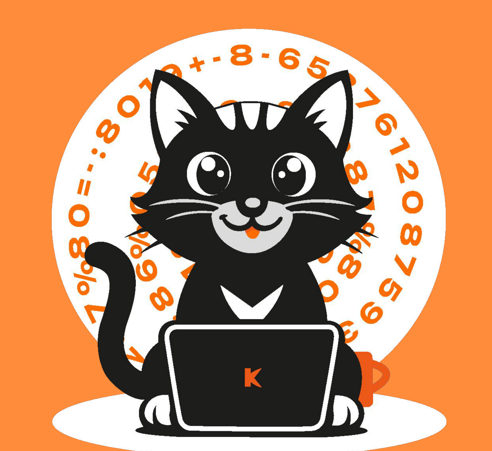

Онлайн-школа математики
Математика, которую наконец-то понимаешь
Превращаем математику из страшного зверя в понятного союзника. Найдём пробелы, объясним сложное простым языком и выстроим путь к результату.
1 на 1 · онлайн

меньше стресса · больше «ага!»Понятная математика
Индивидуальные занятия, подготовка к экзаменам и помощь со школьной программой — в одном понятном маршруте.
01
Закрываем пробелы
Находим темы, которые мешают двигаться дальше, и спокойно разбираем их.
02
Объясняем просто
Убираем лишний шум и переводим сложные темы на понятный язык.
03
Готовим к результату
Помогаем системно подготовиться к ОГЭ, ЕГЭ или школьной программе.
Поддержка с характером
Не душные преподаватели. Живой диалог.
Подберём человека, с которым ученику комфортно разбираться в математике и задавать вопросы без страха ошибиться.
Познакомиться с преподавателями«Меньше стресса, больше “ага!” моментов.»
1:1индивидуальный формат
60минут занятия
∞вопросов можно задавать
0лишнего шума
Математика по классам
Отдельные страницы под каждый класс помогают быстро найти нужную программу.
Давайте просто попробуем
Первый урок — возможность познакомиться с преподавателем и понять, подходит ли вам формат.